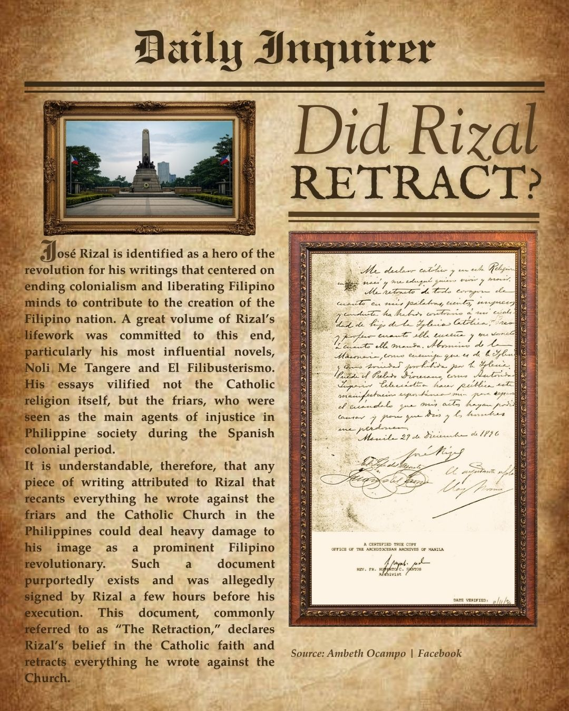
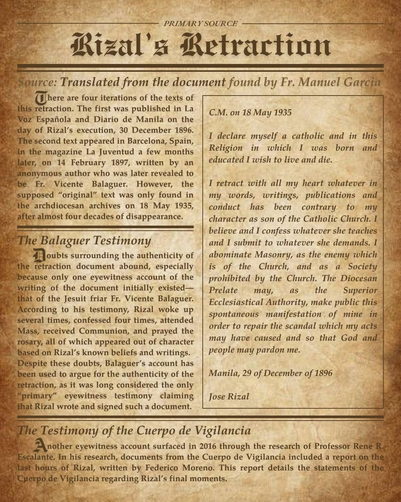
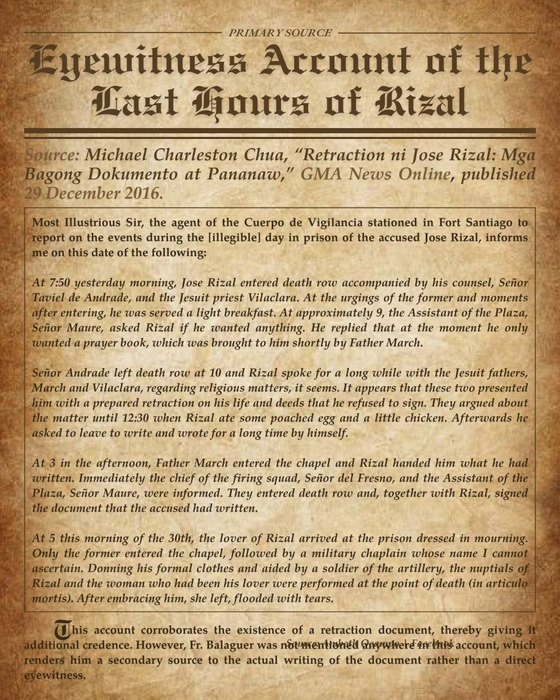
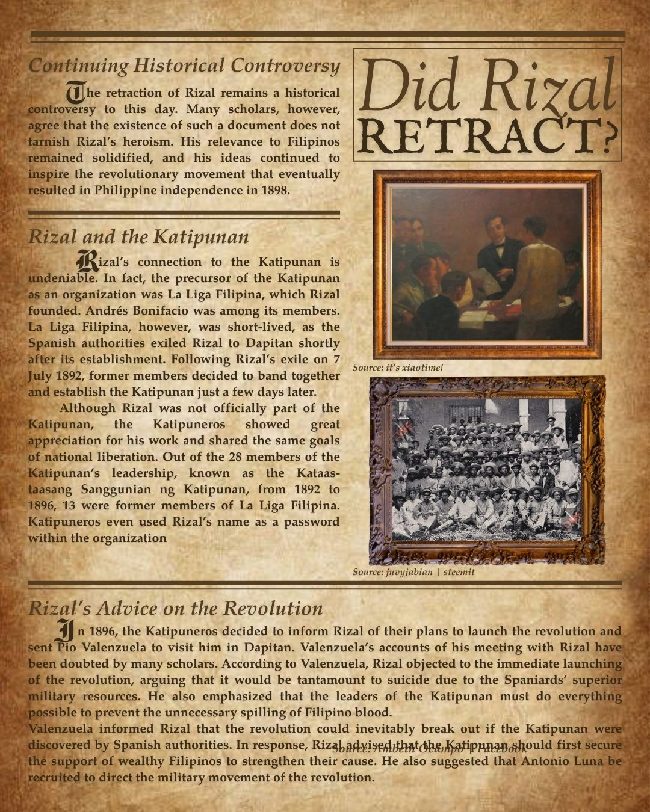

{kind=link}

{kind=link}

{kind=link}

{kind=link}

Did Rizal Retract?
Rizal's Legacy and the Question of Retraction
Jos Rizal is identified as a hero of the revolution for his writings that centered on ending colonialism and liberating Filipino minds to contribute to the creation of the Filipino nation. A great volume of Rizal's lifework was committed to this end, particularly his most influential novels, Noli Me Tangere and El Filibusterismo. His essays vilified not the Catholic religion itself, but the friars, who were seen as the main agents of injustice in Philippine society during the Spanish colonial period.
It is understandable, therefore, that any piece of writing attributed to Rizal that recants everything he wrote against the friars and the Catholic Church in the Philippines could deal heavy damage to his image as a prominent Filipino revolutionary. Such a document purportedly exists and was allegedly signed by Rizal a few hours before his execution on December 30, 1896. This document, commonly referred to as "The Retraction," declares Rizal's belief in the Catholic faith and retracts everything he wrote against the Church.
?? Primary Source: Rizal's Alleged Retraction
"I declare myself a catholic and in this Religion in which I was born and educated I wish to live and die. I retract with all my heart whatever in my words, writings, publications and conduct has been contrary to my character as son of the Catholic Church. I believe and I confess whatever she teaches and I submit to whatever she demands. I abominate Masonry, as the enemy which is of the Church, and as a Society prohibited by the Church."
The Problem of Multiple Versions
There are four different iterations of the text of this retraction:
- First version: Published in La Voz Espaola and Diario de Manila on the day of Rizal's execution, December 30, 1896
- Second version: Appeared in Barcelona, Spain, in the magazine La Juventud on February 14, 1897, written by Fr. Vicente Balaguer
- "Original" version: Only found in the archdiocesan archives on May 18, 1935 After almost four decades of disappearance
- Fourth version: Documented through the Cuerpo de Vigilancia report discovered in 2016
The Balaguer Testimony: Supporting the Retraction
Doubts surrounding the authenticity of the retraction document abound, especially because only one eyewitness account of the writing of the document initially existedthat of the Jesuit friar Fr. Vicente Balaguer. According to his testimony, Rizal woke up several times, confessed four times, attended Mass, received Communion, and prayed the rosary, all of which appeared out of character based on Rizal's known beliefs and writings.
Despite these doubts, Balaguer's account has been used to argue for the authenticity of the retraction, as it was long considered the only "primary" eyewitness testimony claiming that Rizal wrote and signed such a document.
?? The Cuerpo de Vigilancia Report: Questioning Balaguer's Account
Another eyewitness account surfaced in 2016 through the research of Professor Rene R. Escalante. In his research, documents from the Cuerpo de Vigilancia included a report on the last hours of Rizal, written by Federico Moreno. This report details the statements of the Cuerpo de Vigilancia regarding Rizal's final moments.
"At approximately 9, the Assistant of the Plaza, Seor Maure, asked Rizal if he wanted anything. He replied that at the moment he only wanted a prayer book... Seor Andrade left death row at 10 and Rizal spoke for a long while with the Jesuit fathers, March and Vilaclara, regarding religious matters... It appears that these two presented him with a prepared retraction on his life and deeds that he refused to sign. They argued about the matter until 12:30..."
This account corroborates the existence of a retraction document, thereby giving it additional credence. However, Fr. Balaguer was not mentioned anywhere in this account, which renders him a secondary source to the actual writing of the document rather than a direct eyewitness.
Key Questions About the Retraction
The retraction of Rizal remains a historical controversy to this day. The questions surrounding this document include:
- Why did it take 39 years for the "original" document to surface?
- Why are there four different versions of the same document?
- Why was Fr. Balaguer not mentioned in the official Cuerpo de Vigilancia report?
- Did Rizal initially refuse to sign a prepared retraction?
Rizal's Historical Significance Despite the Retraction Controversy
Many scholars, however, agree that the existence of such a document does not tarnish Rizal's heroism. His relevance to Filipinos remained solidified, and his ideas continued to inspire the revolutionary movement that eventually resulted in Philippine independence in 1898.
Whether authentic or not, the retraction document cannot erase the profound impact of Rizal's Noli Me Tangere and El Filibusterismo, which awakened nationalist consciousness among Filipinos and became ideological foundations for the Philippine Revolution.
Rizal's Connection to the Katipunan
Rizal's connection to the Katipunan is undeniable. In fact, the precursor of the Katipunan as an organization was La Liga Filipina, which Rizal founded. Andrs Bonifacio was among its members. La Liga Filipina, however, was short-lived, as the Spanish authorities exiled Rizal to Dapitan shortly after its establishment on July 7, 1892.
Following Rizal's exile, former members decided to band together and establish the Katipunan just a few days later. Although Rizal was not officially part of the Katipunan, the Katipuneros showed great appreciation for his work and shared the same goals of national liberation. Out of the 28 members of the Katipunan's leadership, known as the Kataas-taasang Sanggunian ng Katipunan, from 1892 to 1896, 13 were former members of La Liga Filipina. Katipuneros even used Rizal's name as a password within the organization.
Conclusion: Rizal's Enduring Legacy
Whether Rizal retracted or not, his fundamental contributions to Philippine history remain unquestioned. His novels, essays, and ideas inspired generations of Filipinos to pursue independence and national identity. The retraction controversy, rather than diminishing his legacy, exemplifies the complex and contested nature of historical trutha reminder that primary sources must be critically analyzed and multiple perspectives considered when reconstructing the past.